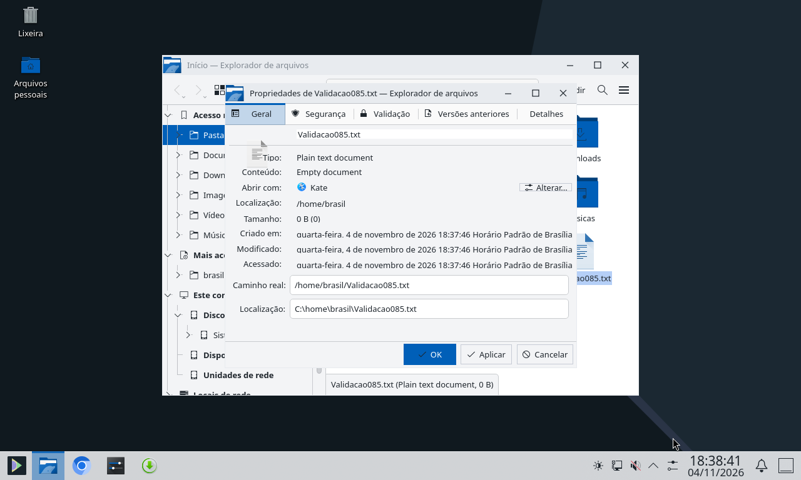
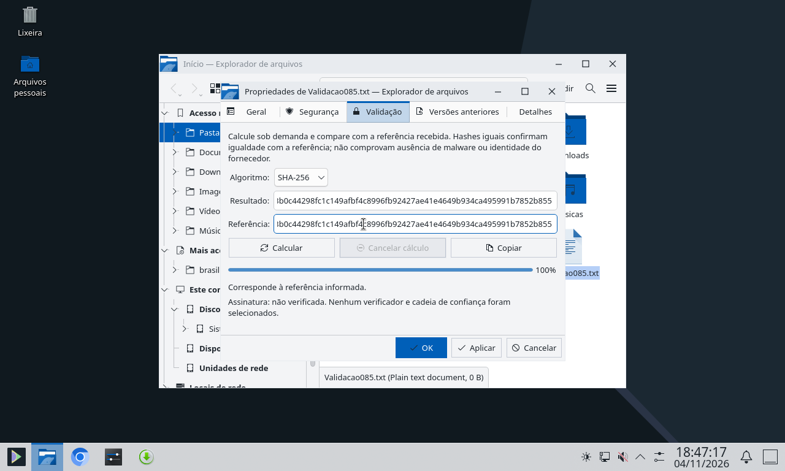

Clique no item com o botão direito e escolha Propriedades. Consulte tamanho e datas e, conforme o tipo de item, use as abas para verificar permissões, calcular um checksum, ajustar compatibilidade ou configurar compartilhamento.

